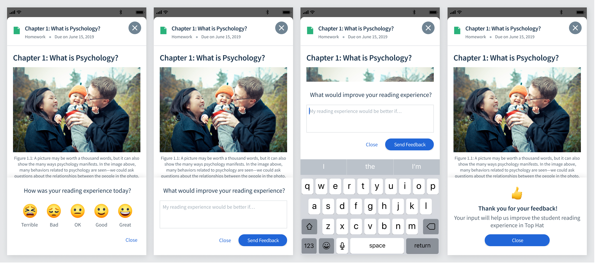
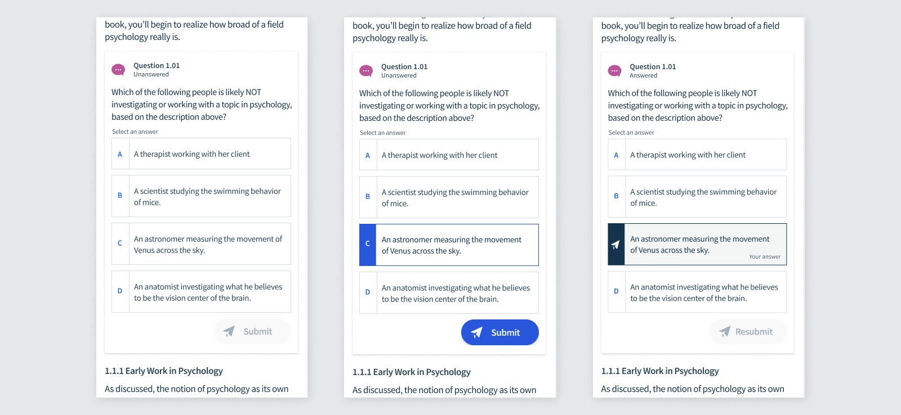
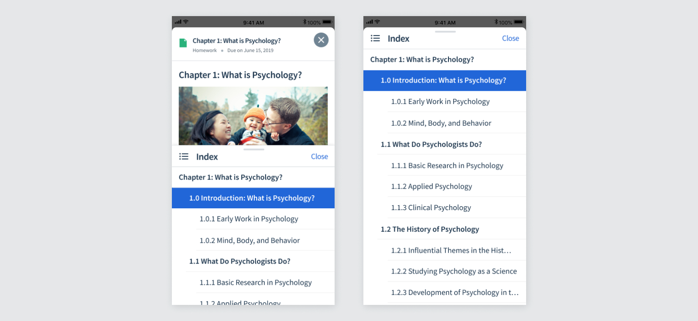
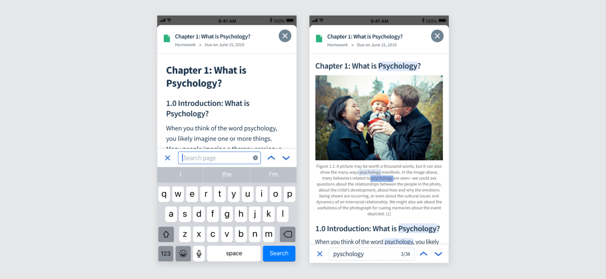

Top Hat
Mobile Pages
A Top Hat Page is a content type used for textbook readings and assignments. They can hold text, images, videos, interactive questions, and more. Like an interactive PDF!
The mobile experience was not up to par with the web, making for an inadequate reading experience. Students want to read their textbooks on their phones, wherever they are.
Steps to building out a vision for mobile pages
- Comparison to web. What features are needed to reach parity with web?
- Competitive analyses. What features exist in other mobile reading apps? How could we delight mobile users with features that don’t exist in web?
- User Interviews. Hearing from students about how they use their textbooks and what they need.
- Data. What features are used most frequently on web? How are they used?
- In-app feedback. Surveying users about their experience to measure improvement over time and hear how we can improve.
Getting in-app feedback
I designed an in-app survey, which would occasionally pop-up while a student was reading. This served 2 purposes: to quantitately measure improvement over time, and to get qualitiative input from users.
What’s needed to meet parity with web?
The web app already had a pretty robust reading experience, and we wanted to at least achieve parity. To do that we needed:
- Easy-to-read formatting + styling (ie. text styles, readable tables, bullet points, etc)
- Inline questions
- A table of contents which can be used to quickly navigate
- Highlighting
- Note-taking
- Search (not currently built in web, but ctrl-F does the job)
- Progress indicator for questions answered
What new features could be useful for mobile?
Some features that would be useful for mobile specifically are:
- Download to read offline
- Font-size adjuster
- Night mode
Improving Readability
The first step was to update the text styles and spacing to be easy and enjoyable to read. Previously the text was pretty raw, and tables were not formatted adequately. I came up with various font styles and spacing to make it suitable for mobile.

Inline Questions
One of the selling features of Top Hat's textbooks is that they include interactive questions. In the app, however, the questions were not inline and had to be opened in a modal. This made it more difficult to refer to the text when answering a question. We wanted to make them inline like on web to make for a smoother experience.
Bottom Navigation
To access the remaining features, I added a bottom navigation. This wouldn't be there while the student is reading, and would appear at the start and when the user scrolls up.
Index
Students can view the table of contents and navigate to a different section via the half page index. This index can be expanded upward to be full screen. I tested out a version that was always full screen, but the half screen was preferred so the user can see the context of the text at the same time as the index.
Highlighting + Notes
On web, students can highlight the text and take notes. It's important that these show up on mobile as well.
Search
Students want to be able to search the text, so I designed a search bar that shows the number of results with arrow to move through the results.
Offline Mode
Lastly, students wanted to be able to read textbooks when they don't have access to wifi, such as their commute to school.